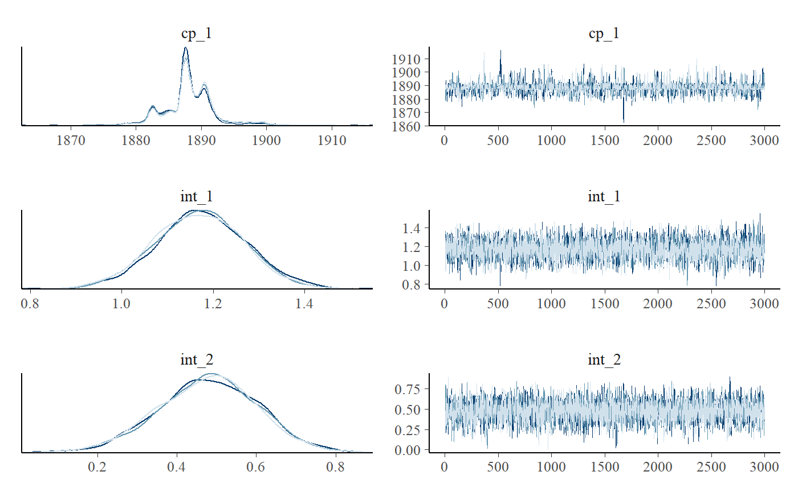

Poisson change point analysis
Jonas Kristoffer Lindeløv
2020-08-03
Source:vignettes/poisson.Rmd
poisson.RmdThe Poisson distribution models the number of events within similar-sized time frames.
Coal mining disasters
A dataset on coal mining disasters has grown very popular in the change point literature (available in boot::coal). It contains a timestamp of each coal mining disaster from 1851 to 1962. By binning the number of events within each year (fixed time frame), we have something very Poisson-friendly:
# Number of disasters by year library(dplyr, warn.conflicts = FALSE) df = round(boot::coal) %>% group_by(date) %>% count() # See it df
## # A tibble: 81 x 2
## # Groups: date [81]
## date n
## <dbl> <int>
## 1 1851 1
## 2 1852 7
## 3 1853 5
## 4 1854 1
## 5 1856 1
## 6 1857 5
## 7 1858 4
## 8 1859 1
## 9 1860 2
## 10 1861 5
## # ... with 71 more rowsThe number of events (n) as a function of year (date) is typically modeled as a change between two intercepts. This is very simple to do in mcp:
model = list( n ~ 1, # intercept-only ~ 1 # intercept-only ) fit = mcp(model, data = df, family = poisson(), par_x = "date")
Let us see the two intercepts (lambda in log-units) and the change point (in years):
result = summary(fit)
## Family: poisson(link = 'log')
## Iterations: 9000 from 3 chains.
## Segments:
## 1: n ~ 1
## 2: n ~ 1 ~ 1
##
## Population-level parameters:
## name mean lower upper Rhat n.eff
## cp_1 1888.30 1880.94 1898.25 1 1611
## int_1 1.17 0.97 1.36 1 3853
## int_2 0.48 0.24 0.72 1 4064We can see that the model ran well with good convergence and a large number of effective samples. At a first glance, the change point is estimated to lie between the years 1880 and 1895 (approximately).
Let us take a more direct look, using the default mcp plot:
plot(fit)

It seems to fit the data well, but we can see that the change point probability “lumps” around particular data points. Years with a very low number of disasters abruptly increase the probability that the change to a lower disaster rate has taken place. The posterior distributions of change points regularly take these “weird” forms, i.e., not well-described by our toolbox of parameterized distributions.
We can see this more clearly if plotting the posteriors. We include a traceplot too, just to check convergence visually.
plot_pars(fit)

Priors
poisson() defaults to link = 'log', meaning that we have to exponentiate the estimates to get the “raw” Poisson parameter \(\lambda\). \(\lambda\) has the nice property of being the mean number of events. So we see that the mean number of events in segment 1 is exp(result$mean[2]) (3.224395) and it is exp(result$mean[3]) (1.6127489) for segment 2.
Default priors were used. They are normals with a standard deviation of 10. I.e. with 68% probability mass between exp(10) = 22026 and exp(-10) = 1 / 22026:
cbind(fit$prior)
## [,1]
## cp_1 "dunif(MINX, MAXX)"
## int_1 "dnorm(0, 10)"
## int_2 "dnorm(0, 10)"As always, the prior on the change point forces it to occur in the observed range. These priors are very vague, so update with more informed priors for your particular case, e.g.:
Model comparison
Despite the popularity of this dataset, a question rarely asked is what the evidence is that there is a change point at all. Let us fit two no-changepoint models and use approximate leave-one-out cross-validation to see how the predictive performance of the two models compare.
A flat model and a one-decay model:
# Fit an intercept-only model fit_flat = mcp(list(n ~ 1), data = df, family=poisson(), par_x = "date") fit_decay = mcp(list(n ~ 1 + date), data = df, family = poisson()) plot(fit_flat) + plot(fit_decay)

Not we compute and compare the LOO ELPDs:
loo::loo_compare(fit$loo, fit_flat$loo, fit_decay$loo)
## elpd_diff se_diff
## model1 0.0 0.0
## model3 -3.8 2.3
## model2 -9.1 3.8The change point model seems to be preferred with a ratio of around 1.7 over the decay model and 2.5 over the flat model. Another approach is to look at the model weights:
loo_list = list(fit$loo, fit_flat$loo, fit_decay$loo) loo::loo_model_weights(loo_list, method="pseudobma")
## Method: pseudo-BMA+ with Bayesian bootstrap
## ------
## weight
## model1 0.909
## model2 0.007
## model3 0.084Again, unsurprisingly, the change point model is preferred and they show the same ranking as implied by loo_compare.
JAGS code
Here is the JAGS code for the full model above.
cat(fit$jags_code)
##
## model {
##
## # Priors for population-level effects
## cp_0 = MINX # mcp helper value.
## cp_2 = MAXX # mcp helper value.
##
## cp_1 ~ dunif(MINX, MAXX)
## int_1 ~ dnorm(0, 1/(10)^2)
## int_2 ~ dnorm(0, 1/(10)^2)
##
##
## # Model and likelihood
## for (i_ in 1:length(date)) {
## X_1_[i_] = min(date[i_], cp_1)
## X_2_[i_] = min(date[i_], cp_2) - cp_1
##
## # Fitted value
## y_[i_] =
##
## # Segment 1: n ~ 1
## (date[i_] >= cp_0) * (date[i_] < cp_1) * int_1 +
##
## # Segment 2: n ~ 1 ~ 1
## (date[i_] >= cp_1) * int_2
##
## # Likelihood and log-density for family = poisson()
## n[i_] ~ dpois(exp(y_[i_]))
## loglik_[i_] = logdensity.pois(n[i_], exp(y_[i_]))
## }
## }